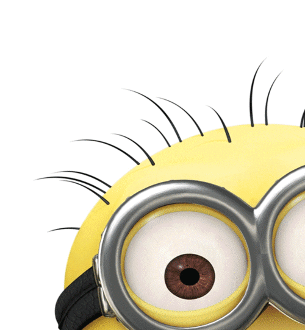

<textarea rows="50" cols="250">
<html>
  <head>
    <script type="text/javascript">
       function okno_zamknij_cur()
		{
			window.close()
		}
	</script>
 </head>
<body>
 Teoria:<br>
a)Uwagi na temat JS <br>
-kiedy powstała-JavaScript został wynaleziony w roku 1995 <br>
-dlaczego jest to język skryptowy-Dlatego, że programy są interpretowane a nie kompilowane  <br>
-gdzie jest wykonywany JS-wykonywany jest po stronie serwera kod jest pisany w językach komputerowych i wykonywany na serwerze WWW. <br>
-dlaczego jest to bezpieczne narzędzie-jest bezpieczny, gdy projekty w nim budowane są traktowane z odpowiednią dbałością i zastosowaniem najlepszych praktyk. <br>
-czy jest to język obiektowy-JavaScript to obiektowy język skryptowy. Aplikacje napisane w języku obiektowym działają w przeglądarce, a kod JavaScript jest uruchamiany w przeglądarkach. Dlatego nie jest on językiem obiektowym. <br> 
<br>
b)Przepisz linie kody pod nimi wytłumaczenie:<br>
&lsaquo;input type="button" name="przycisk" value="Nowa Strona" onclick="WinOpen(' ')" &rsaquo; <br>
<br>
type="button" to przycisk <br>
name="przycisk" to nazwa tego przycisku <br>
value="Nowa strona" to tekst na przycisku <br>
onclick="WinOpen(' ')" to uruchamia skrypt <br>	
<! zastąp odpowiedziami/patrz poniżej Teoria–>
<br>
<textarea name="window.open" cols="113" rows="1" disabled> window.open("obraz.html","okienko","toolbar=no,directories=no,menubar=no,height=280,width=160,top=200,left=200"); </textarea> <br>
 <br>
toolbar=no-ukrywa przyciski katalogów <br>
directories=no-widocznosc katalogu <br>
menubar=no-widocznosc paska menu <br>
height=280-wysokosc <br>
width=160-szerokosc <br>
top=200-odleglosc od gory <br>
left=200-odleglosc od lewej <br>
<br>
window.close() <br>
<br>
window.close() <br>
zamyka okno <br>
	
	
 <input type="button" value="zamknij okno" onclick="okno_zamknij_cur()"/>
</body>
</html>
